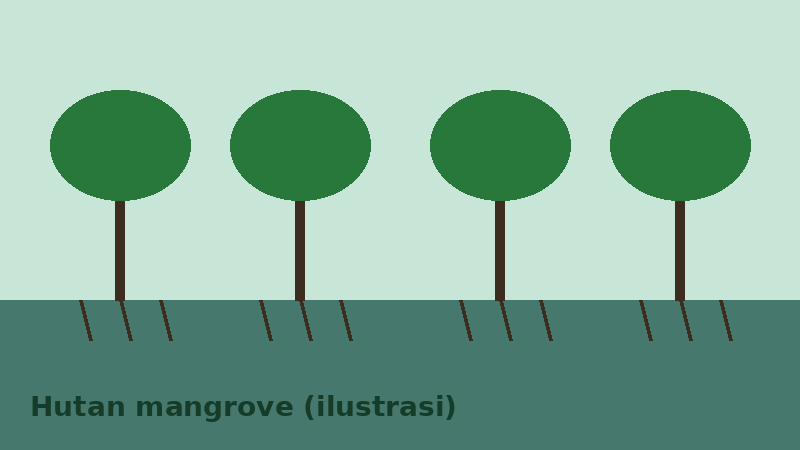

Selamat Datang, Pengamat Burung
Hutan mangrove di pesisir Jakarta Utara menjadi tempat singgah dan tempat hidup berbagai burung air. Situs ini merangkum pengetahuan dasar agar pemula dapat mengenali burung, memilih waktu pengamatan, dan mencatat temuannya dengan rapi.

Isi Situs
Daftar Spesies
Tabel enam burung yang umum diamati beserta nama ilmiah dan status konservasinya.
Panduan Pengamatan
Artikel singkat tentang perlengkapan, waktu terbaik, dan etika di lapangan.
Lapor Temuan
Formulir untuk mencatat burung yang kamu lihat.
Mengapa Mangrove Penting?
- Menjadi tempat bersarang dan mencari makan burung air.
- Menahan abrasi dan gelombang di garis pantai.
- Menjadi habitat ikan, udang, dan kepiting.